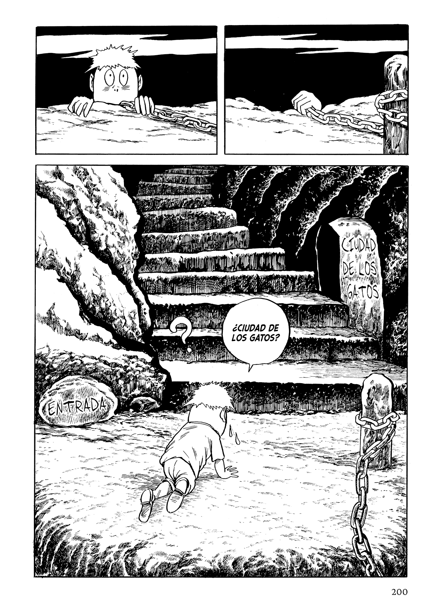

Imagen con logo
Sobre mí
Trabajos
Ejemplos
Título
Contenido
As the gods will - Distrito Manga
Farewell my dear Cramer - Distrito Manga

Agente de fútbol - Hidra Manga
Mi amigo el Kappa - Satori Ediciones
La vida de un mangaka - Distrito Manga
Ranger Reject - Distrito Manga